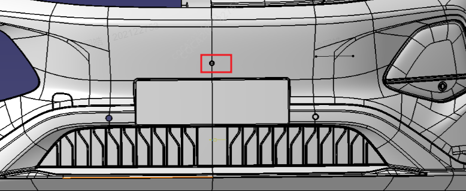
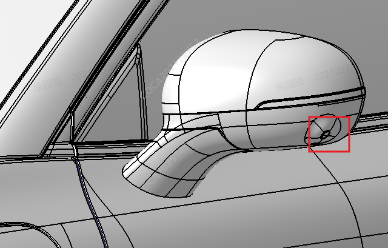
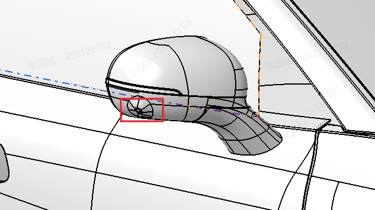
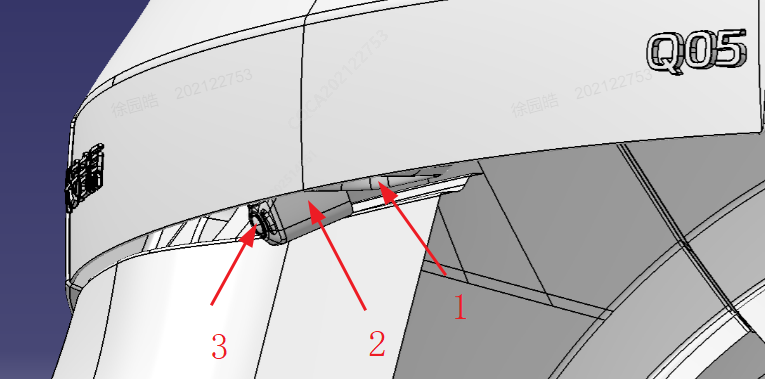

1. Декоративный элемент двери задка; 2. Кронштейн задней камеры панорамного обзора; 3. Задняя камера панорамного обзора
| Инструмент | Крестовая отвертка |
| Момент затяжки | 1.5±0.2N，1±0.3N |
1. Сначала снять декоративные элементы переднего бампера / двери задка
2. С помощью крестовой отвертки открутить кронштейн передней/задней камеры панорамного обзора
3. Отсоединить разъем жгута проводов
4. Снять камеру в направлении, противоположном фиксации защелками
Установить переднюю и заднюю камеры панорамного обзора в порядке, обратном снятию; для замены левой или правой камер панорамного обзора требуется заменить наружное зеркало заднего вида в сборе